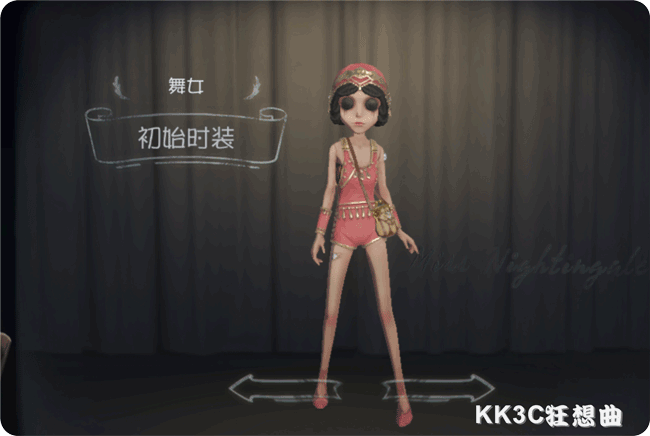
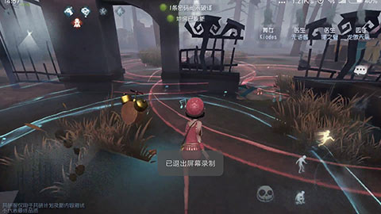

舞女

【人物介紹】
名字：瑪格麗莎‧澤萊
與感情不和的丈夫離婚後，沒有穩定經濟來源的瑪格麗莎，對＂自由＂的另一面有了新的認識。一個成為百萬富翁的機會？他當然不會錯過。
【能力介紹】
二重奏： 隨身攜帶音樂盒，可播放兩隻不同節奏的樂曲，樂音所及範圍內，求生者和監管者的行為及交互會隨著音樂節奏加快或減慢，但變化速度會有所差異；同向的樂音疊加區域效果會疊加且衰減；長按技能施放可獲得高空視野。
舞者：二重奏爛熟于心，舞女自身不會受到樂音減速效果影響。
雜技：出身於馬戲團的舞女身手輕盈，從高處落下後可借力增加移動速度。
畏懼：舞女的膽小使其無法聚精會神，破譯速度降低，每有一名隊友被淘汰均會帶來恐懼，使得舞女板窗交互速度降低。
